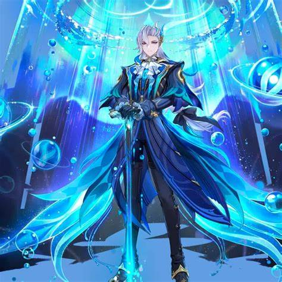

Personajes Hydro:

Reservado: A pesar de su posición pública, Neuvillette mantiene una actitud reservada y distante, lo que añade un aire de misterio a su carácter.
y su rol como juez supremo. Esto podría incluir ataques basados en Hydro que simbolicen equilibrio y justicia.
Neuvillette
Neuvillette es un personaje 5 estrella DPS puro.
Historia
Orígenes:
Título y Rol: Neuvillette ocupa el cargo de Juez Supremo en Fontaine, lo que lo convierte en una figura clave en el sistema judicial de la región. Es conocido por su imparcialidad y su compromiso con la justicia. Relación con Fontaine: Como representante de la ley, Neuvillette desempeña un papel crucial en mantener el orden en una nación donde las cortes y los juicios son eventos públicos y espectaculares. Misterio: Aunque es respetado por su sabiduría y autoridad, Neuvillette es un personaje enigmático. Su verdadera naturaleza y sus motivaciones no son del todo claras, lo que lo convierte en un personaje intrigante.Personalidad:
Justo e Imparcial: Neuvillette es conocido por ser un juez justo que sigue estrictamente las leyes de Fontaine. Su comportamiento serio y profesional refleja su dedicación al deberReservado: A pesar de su posición pública, Neuvillette mantiene una actitud reservada y distante, lo que añade un aire de misterio a su carácter.
Habilidades en Combate:
Aunque los detalles exactos de sus habilidades pueden variar según las actualizaciones del juego, como personaje Hydro se espera que tenga habilidades que reflejen su conexión con el aguay su rol como juez supremo. Esto podría incluir ataques basados en Hydro que simbolicen equilibrio y justicia.